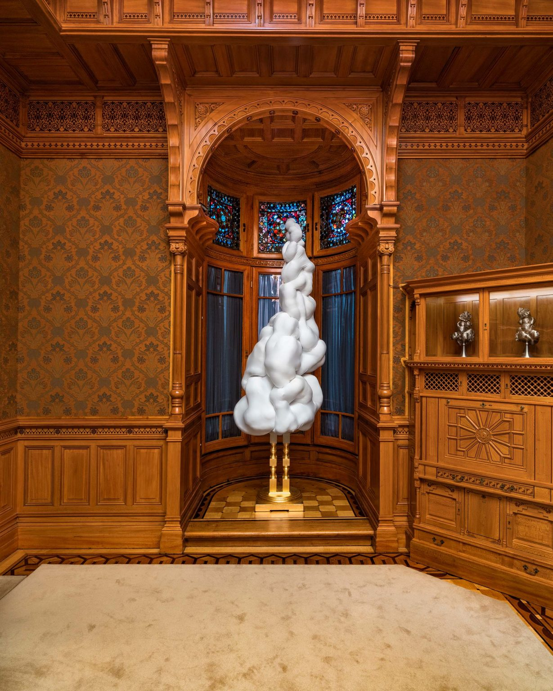

A helicopter upside down by Paola Pivi. Photo: Attilio Maranzano, courtesy San Carlo Cremona
Anselm Kiefer’s Monumental Show; a Cuban Painter Forges a New Path; and More Openings Around the Globe
Cremona, “Paola Pivi: A Helicopter Upside Down” (Until June)In the central nave of a 400-year-old church in northern Italy, Italian artist Paola Pivi has installed a helicopter belly-up, like an upside-down turtle. It’s a decidedly jarring sight. This is not Pivi’s first strange but delightful sculpture. Her first exhibition, in 1997, was a huge 18-wheeler flipped on its side. This show is only the latest in her unexpected visual concoctions: At the 1999 Venice Biennale, she presented an upside-down fighter jet. She’s covered polar bear sculptures in neon plumes and has brought horses to the Eiffel Tower. More recently, in 2022, New York’s High Line saw a small replica of the Statue of Liberty wearing a cartoonish mask. sancarlocremona.com
Amsterdam, “Anselm Kiefer: Sag Mir Wo Die Blumen Sind” (Opens March 7)Over five decades, German artist Anselm Kiefer has unflinchingly confronted Germany’s painful history in a varied oeuvre of provocative, melancholy, and sometimes deeply dark monumental sculptures and paintings thickly slathered in paint. Often, encrusted layers of straw, ash, and clay imbue his work with both gravity and fragility. A massive exhibition spanning two of Amsterdam’s institutions celebrates the artist’s 80th birthday this year: The Van Gogh Museum examines his Dutch influence, while the Stedelijk, one of the first museums to purchase Kiefer’s work, brings out all the Kiefers in their collection. vangoghmuseum.nl
London, “Cesar Santos: Manuscripts” (Until April 25)In 2010, Cuban painter Cesar Santos started “Syncretism,” a series of paintings fluidly moving between the styles of masters like Michelangelo, Manet, van Gogh, and Picasso: a parody of Manet’s Le Déjeuner Sur l’Herbe in which picnickers eat McDonald’s, or realistic portraits set in front of van Gogh’s blue bedroom, for example. But at 40 years old, Santos experienced a sudden change of heart. In the past few years, he began experimenting with abstraction, channeling his fluency across different techniques into uncanny and inarticulable shapes. Following a solo presentation in New York, Santos makes his debut in the UK with this new series. “I want to see everything new again,” he says. robilantvoena.com
London, “James Welling and Bernd & Hilla Becher” (Opens March 7)American photographer James Welling first saw Bernd and Hilla Becher’s photographs at the 1970 MoMA exhibition “Information.” The husband and wife photographers had been carefully documenting Germany’s disappearing industrial landscape since the ’60s. Welling, taken by their dedication, later compared the Bechers to bird-watchers in their obsession with variations of water towers, furnaces, and gas tanks. He began to make photographs in 1976, which largely consisted of local architecture. In a 1988 series, he chronicled railroads throughout North America. This show places Welling’s photographs of Marcel Breur’s Brutalist architecture in conversation with the Bechers’ renowned work. maureenpaley.com
New York, “Dorothy Hood: Remember Something Out of Time” (Until April 12)While Dorothy Hood is considered by some as one of Texas’s greatest 20th-century painters, she never quite became a household name in her lifetime. The ambitious Texan began her artistic career in Mexico after a short vacation there in the ’40s turned into two decades. There, she found herself at the forefront of Mexico City’s creative community, including exiled European intellectuals and artists like Frida Kahlo, Sophie Treadwell, and Luis Buñuel. She would experiment with different styles (her first exhibit in Mexico consisted of portraits) before settling on abstraction. “Landscapes of my psyche,” she said of her work. This is Hood’s first solo exhibition in New York since the 1980s (she died in 2000), showcasing eight of her paintings, along with drawings and collages. hollistaggart.com —Vasilisa Ioukhnovets

An installation by Bobbi Meier at the Driehaus Museum. Photo: Robert Salazar and Robert Heishman
Reimagining an American Architectural Gem
Cambridge, “Pedro Gómez-Egaña: The Great Learning” (Opens Feb. 21)Colombian-born visual artist Pedro Gómez-Egaña makes sculptures, immersive installations, and performances that highlight the changing subjectivity of time and space, particularly in modern culture. In his first Stateside museum exhibition, the artist takes inspiration from the architectural features and optical illusions of the Parthenon to investigate how architecture shapes our lives. A moving set resembles an apartment with shifting, duplicated walls. Gómez-Egaña invites the viewer to rethink how everyday objects and our domestic spaces hold influence over us. listart.mit.edu
Chicago, “A Tale of Today: Materialities” (Until Apr. 27)The Driehaus Museum of 19th-century art, architecture, and design is housed in the former home of Chicago banker Samuel Nickerson. After its construction in 1883, the house was the most expensive residence in the city. Signs of Gilded Age America remain in the onyx, exotic wood, stained glass, and 17 types of marble that decorate the interior. For the museum’s largest contemporary exhibition, 14 artists were asked to take inspiration from within the museum, responding to materials such as the long-gone taxidermy that used to decorate the house, the delicacy of the stained-glass windows, and the significance behind Nickerson’s early adoption of the lightbulb. driehausmuseum.org
Madison, “The Crafted World of Wharton Esherick” (Until May 18)A solitary painter, Wharton Esherick settled down in the woods northeast of Philadelphia in 1913. He soon started carving simple frames for his paintings, slowly discovering an affinity for woodworking that would eventually become his lifelong dedication. For the next 55 years, Esherick sculpted wood, still considered a plain craft medium, into elegant and one-of-a-kind furniture that included curved tables, twisted staircases, and a dovetail fireplace. After the designer’s death in 1970, his studio and home were converted into a museum holding almost 3,000 of his works. The secluded museum is visited mostly by those who know where to look, meaning this exhibition at the University of Wisconsin—Madison’s Chazen Museum of Art brings a selection of groundbreaking pieces to a new crowd. chazen.wisc.edu
New York, “A Century of The New Yorker” (Opens Feb. 22)In 1925, husband and wife Harold Ross and Jane Grant published the first issue of The New Yorker, envisioning a publication of “gaiety, wit, and satire.” The beloved weekly magazine turns 100 years old this month. In honor of the occasion, the New York Public Library digs through the archives—a monumental collection of over 2,500 boxes—to remember the people, stories, and ideas that have shaped the magazine. With the typewriters used by editor William Shawn and writer Lillian Ross, manuscripts, founding documents, letters from J.D. Salinger, photographs, and, of course, past cartoons, this exhibition is full of journalistic treasures. nypl.org
Providence, “Julien Creuzet: Attila cataract your source at the feet of the green peaks will end up in the great sea blue abyss we drowned in the tidal tears of the moon” (Opens Feb. 20)At last year’s 60th Venice Biennale, France was represented by Julien Creuzet, the first French-Caribbean artist and one of the youngest to do so. Raised in Martinique and living in Paris, Creuzet explores diaspora and confronts French colonial history across sculpture, video, music, and poetry (unconventionally, he names his shows with lines of poetry). The work is rich with color, noise, and even scent. For the French Pavilion, Creuzet crafted a sensory experience with spools of thread, beads, and wiry silhouettes dripping from the ceiling. Creuzet reimagines this exhibition for Brown University’s contemporary art gallery with 17 artworks, including six massive steel sculptures, video animations, and songs that contemplate the theme of water in the history of both the transatlantic slave trade and colonialism. bell.brown.edu

Fergus Greer, Leigh Bowery Session 4 Look 17 August 1991. Photo: Copyright Fergus Greer, courtesy Michael Hoppen Gallery.
Bob Marley’s Kid Photographer, a Punk Legend, and a Painting Pioneer; Global Openings Celebrating Defining Artists
London, “Leigh Bowery!” (Opens Feb. 27)To describe Leigh Bowery as a work of art in himself is not a cliché. The Australian in London would paint himself in flamboyant colors and dress in outrageous garments—or nothing at all. “Flesh is my most favorite fabric,” he once said. Bowery’s outrageous performances, musical performances with his band Minty, short-lived Taboo nightclub, and, most famously, modeling for painter Lucian Freud broke all conventions. In 1981, he wrote in his diary, “Fashion, where all girls have clear skin, blue eyes, blonde-blown wavy hair and a size 10 figure, and all the men have clear skin, moustaches, short waved blonde hair and masculine physical appearance, STINKS.” Bowery died prematurely in 1994 of an AIDS-related illness. This legacy-defining exhibition remembers Bowery’s colorful, unapologetic, and influential life. tate.org.uk
Oslo, “Georg Baselitz: Feet First” (Until May 4)Though Georg Baselitz was behind his contemporaries in achieving international fame, the 87-year-old painter’s confrontational work is credited with shaping German art emerging in the aftermath of World War II. “I was born into a destroyed order, a destroyed landscape, a destroyed people, a destroyed society,” he said in 1995. “And I didn’t want to reestablish an order: I had seen enough of so-called order.” In disruption of convention and perhaps also to find his footing in the art world, he’s been painting his work upside down since 1969. In Oslo, the Munch Museum investigates the German painter’s interest in Edvard Munch. Baselitz was so fascinated by a portrait of Munch in his studio with his feet outside the frame that he made a painting of the missing feet. Baselitz’s references to Munch and The Scream are represented in 80 paintings, drawings, and sculptures from the early 1960s to recent years. munchmuseet.no
Potsdam, “Kandinsky’s Universe: Geometric Abstraction in the 20th Century” (Until May 18)It’s rumored that painter Wassily Kandinsky’s interest in abstraction began when he came home to his studio one day to see one of his paintings hanging upside down. Confused, it took him some time to realize it was his own work. Kandinsky would describe the stunning potential of abstraction in the foundational text Point and Line to Plane. This survey of abstractionism starts with 12 works by Kandinsky, following his influence in over 100 works by more than 70 artists, including Josef Albers, Barbara Hepworth, Frank Stella, and Victor Vasarely. museum-barberini.de
Paris, “Dennis Morris: Music + Life” (Until May 18)One of British photographer Dennis Morris’s most famous shots is one he took at 16 years old: a portrait of Bob Marley smoking a joint. In 1974, when Morris was attending school in London, he learned that Bob Marley was playing close by. The aspiring photographer went, camera in hand, and asked Marley for a picture. Marley agreed, but also invited him to join the tour. Morris would go on to extensively document Marley, as well as the Sex Pistols and London’s punk scene. All the while, he preferred an inconspicuous Leica camera. “No one takes it seriously. So you get them to open up.” Now, the first retrospective of the photographer in Paris presents the full range of his portfolio filled with legendary musicians. mep-fr.org —Vasilisa Ioukhnovets